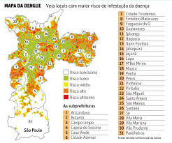

Focos de Dengue Registrados
Seus Registros
Nenhum foco registrado ainda.
Detalhes do Foco
Descrição:
Data de Registro:
Categoria:
Latitude:
Longitude:
Detalhe da Localização:
Mapa de Áreas com Focos

* Mapa simulado mostrando áreas de possível foco.